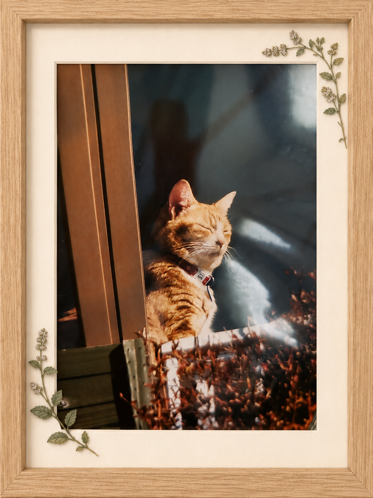
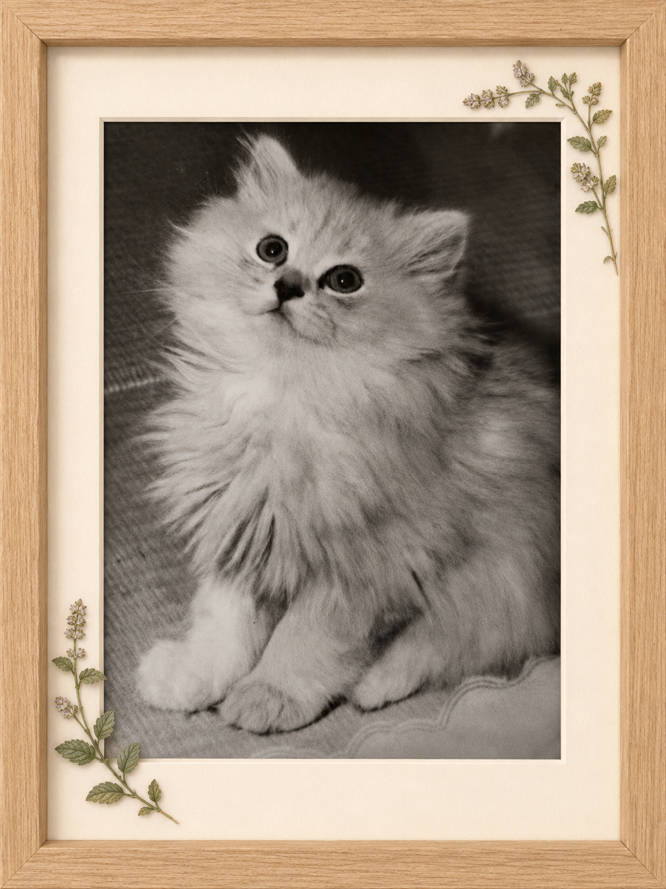
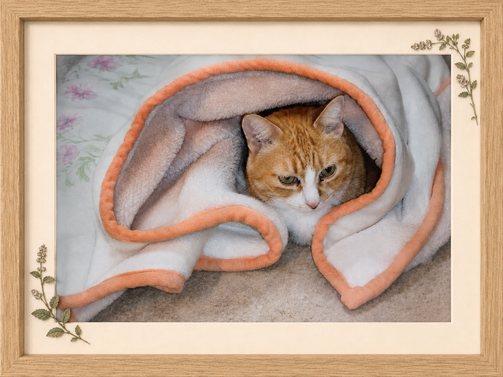
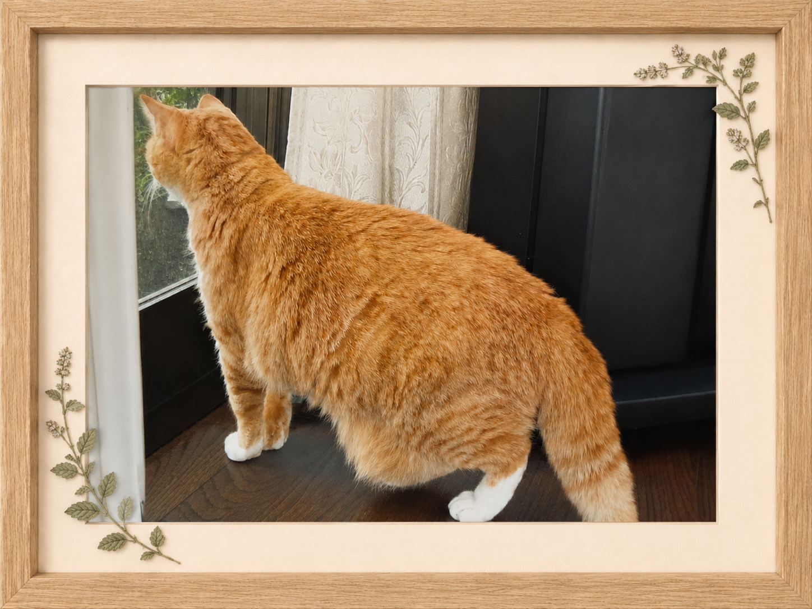
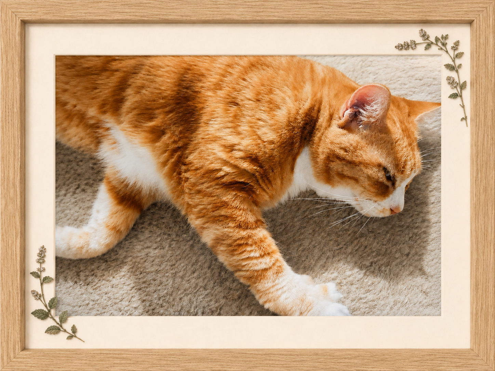
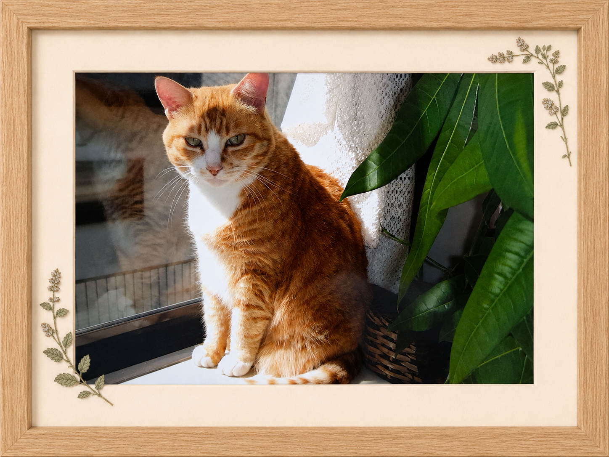

Cat / ハナちゃん
I still remember the gentle way my brother used to call, “Hana-chan.” His voice was filled with warmth and love. Whenever I think of how dearly he cared for Hana-chan, I can still feel the kindness and purity of his heart.
兄が「ハナちゃん」と優しく呼ぶ声は、今でも私の心に残っています。 その声には、深い愛情と温かさがあふれていました。 ハナちゃんを本当に大切にかわいがっていた兄の姿を思い出すたびに、兄のやさしく清らかな心が今も感じられます。





